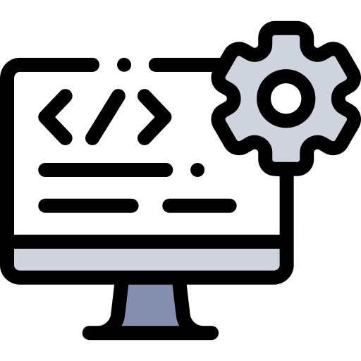

Análisis de Costos de Hardware y Software
Costos de Hardware
| Componente | Proveedor | Costo (COP) |
|---|---|---|
| Tarjeta Madre ASUS PRIME B660M-A | Alkosto | 950.000 |
| Procesador Intel Core i5 12400F | Mercado Libre | 890.000 |
| Tarjeta Gráfica NVIDIA RTX 3060 | Compudemano | 3.200.000 |
| Memoria RAM 16GB DDR4 Kingston | Alkosto | 430.000 |
| Fuente de Poder Corsair 650W | Compumax | 680.000 |
| Disco Duro Seagate 1TB | Mercado Libre | 370.000 |
| Gabinete Cooler Master MB320L | Compumax | 850.000 |
Costos de Software
| Software | Proveedor | Costo (COP) | Costo Variable |
|---|---|---|---|
| Licencia Windows 10 Pro | La tienda del software | 76.000 | |
| Windows server + SQL Server | Microsoft | 1.200.000 | 250.000 anual |
| Software Libre | Ubuntu + MySQL | 0 | 0 |
| Enterprise Linux + MariaDB | Red Hat | 1.500.000 | 200.000 anual |
Distribucion de Costos por Componente
Conclusión y Selección del Proveedor
 Equipo Seleccionado
Equipo Seleccionado
Luego de realizar un análisis exhaustivo de costos y especificaciones, se ha seleccionado como proveedor de hardware a Lenovo con el equipo:
- Modelo: IdeaPad Slim 3 15IRH8
- Procesador: Intel Core i7
- Memoria RAM: 16 GB
- Almacenamiento: 1 TB SSD
- Precio estimado: $4.500.000 COP
 Software Seleccionado
Para maximizar eficiencia y reducir costos, se priorizarán herramientas de código abierto y licencias esenciales:
- Sistema Operativo: Windows 10 Pro
- IDE: IntelliJ IDEA (para proyectos profesionales)
- Bases de Datos: MySQL / PostgreSQL (open source)
- Framework Backend: Django (Python)
- Framework Frontend: React.js
Stack Tecnologico Seleccionado

üõ†Ô∏è Justificaci√≥n t√©cnica del sistema
Para el desarrollo del sistema de gestión de inventarios, se seleccionó un stack tecnológico basado en HTML, CSS, JavaScript, PHP y MySQL. Esta combinación ofrece una solución funcional, económica y ampliamente soportada.
Se eligieron estas tecnologías por su facilidad de implementación, curva de aprendizaje accesible y excelente compatibilidad con servicios de hosting estándar. Además, permiten construir una interfaz amigable, lógica de servidor robusta y almacenamiento confiable para los datos del inventario.
El sistema está diseñado para atender hasta 100 usuarios concurrentes, lo que hace viable su implementación en servidores compartidos de gama media.
üí∞ Costos estimados del proyecto
- üåê Dominio: $50.000 COP/a√±o
- üíª Hosting compartido: $20.000 COP/mes
- üñ•Ô∏è Equipos: Uso de computadores personales o institucionales